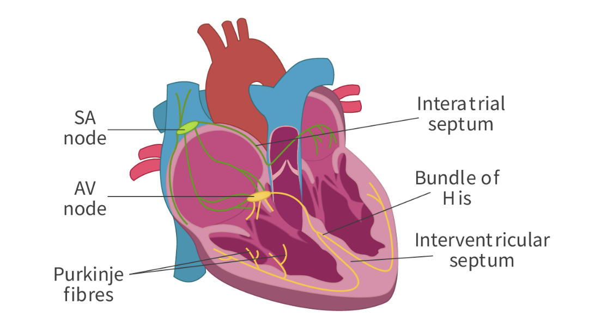

Initiation of Cardiac Cycle
Pacemacker (Sinotrial Node) sends out electrical signals.

Stage 1: Artial Systole
The electrical signal (from SA node) cause 2 atrium to contract at the same time.
AV valves open so the blood can pass (semilunar valves closed).
AV node (Lowever right atrium) keep on sending electrical signals from SA node.
Stage 2: Ventricular Systole
Electrical signals pass on ventricles, 2 ventricles contract at the same time.
Av valves and Semilunar valves closed, Semilunar valves open when pressure is higher than aorta.
Blood leaves Ventricles to aorta & plumonary artery
Stage 3: Artial & Ventricular Diastole
Heart muscle relaxes, pressure in heart decreases.
Av valves open, blood refill into ventricles (about 70% of the volume).